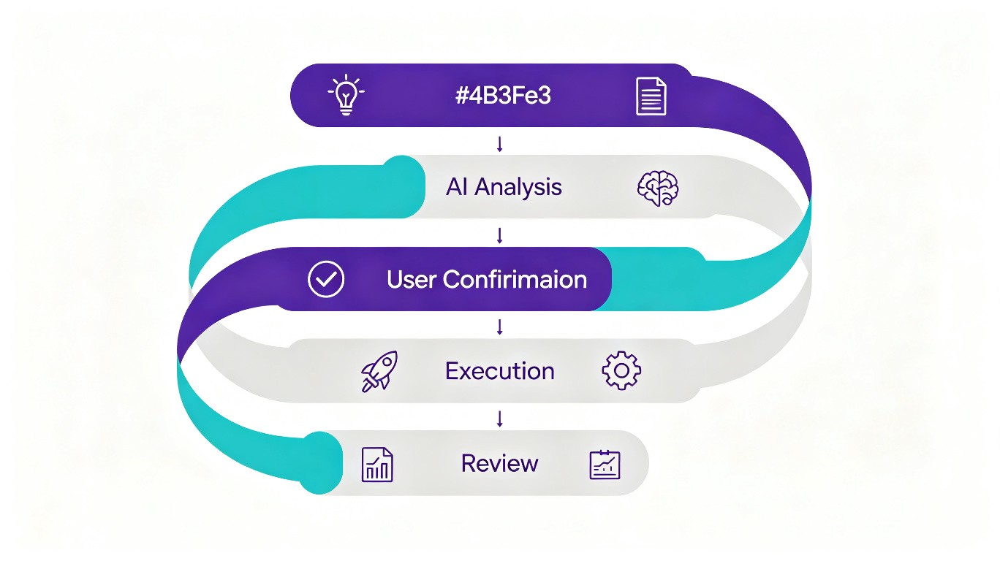
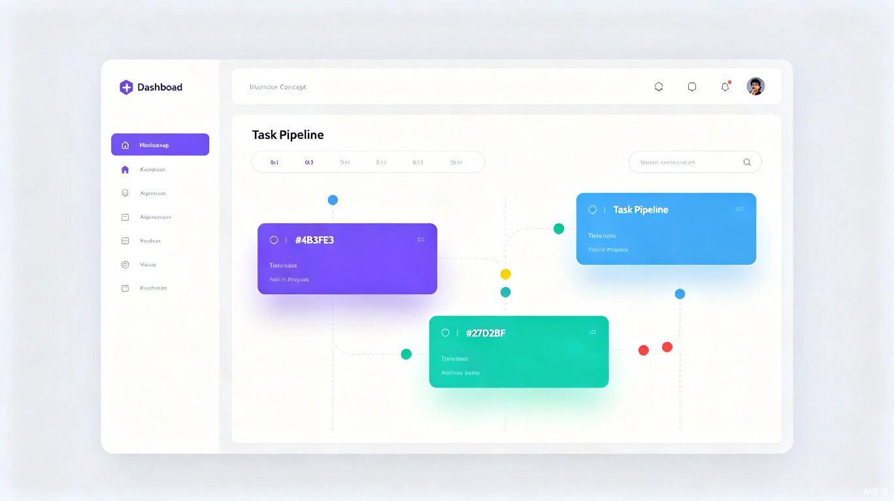

1 产品愿景与核心价值
愿景：让每个人都能把脑中的想法零摩擦地转化为实际行动——AI 做分析和执行的外骨骼，人只做决策和确认。
大多数人不是没有想法，而是卡在「把想法变成可执行的第一步」。灵感来了记在备忘录，然后因为懒惰、分心或选择瘫痪，再也没执行过。这个系统要解决的根本问题就是：想法与执行之间的鸿沟。
系统的核心理念可以浓缩为三个关键词：
2 用户痛点分析
通过对日常工作和学习习惯的观察，识别出四大核心痛点：
3 目标用户画像
- 使用场景
- 电脑前随时记录灵感和材料
- 技术能力
- 强 AI 用户，熟悉 Hermes / Codex / Cursor
- 界面偏好
- 偏好纯可视化界面，非命令行
- 典型任务
- 写文章、研究技术方案、做副业项目、搞产品原型
- 设备策略
- 初期电脑端 → 后期移动端同步
- 核心诉求
- 减少从想法到行动的摩擦力
4 核心解决方案
系统通过三个层面的设计，精准回应每个痛点：
| 痛点 | 解决方案 | 核心机制 |
|---|---|---|
| 想法记录即消失 | 随手记 + AI 自动分析 | 双入口设计（想法 / 材料），记录即进入处理管道 |
| 选择瘫痪 | AI 优先级排序 + 执行方案规划 | 价值评估 + 自动排序 + 方案拆解到 Skill 级 |
| 执行无闭环 | 可视化进度 + 自动串联执行 + 完成标记 | 红黄绿灯实时可视，一键启动全自动串联 |
功能全景
丢材料：丢文章 / PDF / 链接，AI 研读后生成任务建议
优先级排序：按价值高低排列
方案拆解：每步精确到「谁执行 + 什么 Skill + 预期效果」
预演流程图：每个任务拆为步骤，全红灯预览
手调能力：修改排序、增删任务、编辑方案
批量确认：全部方案点头后一键开始
实时可视：红黄绿灯 + 线性流程图
执行报告：每步谁做的、用了什么 Skill、花了多久
5 五层流水线架构
整个系统是一个单向流水线，用户只在输入和确认两个节点参与，中间和后续全由 AI 驱动。
紫色圆点 = AI 驱动层 · 青色圆点 = 用户参与层
各层详细设计
第一层：输入层（双入口设计）
系统提供两种输入模式，最终汇合到同一个处理管道：
第二层：AI 分析层（智能编排引擎）
AI 编排器做三件核心事情：
- 价值评估：判断每个想法值不值得做，给出建议
- 优先级排序：按价值高低自动排列执行顺序
- 方案拆解：精确到每一步「执行者 + Skill/工具 + 预期效果」
执行者分配策略：Hermes 做协调主执行官，代码任务派给 Cursor / Codex。用户始终保有最终决定权——AI 说「不值得做」的任务，用户仍可强制加入执行列表。
第三层：确认层（人在回路中）
这是用户唯一需要深度参与的环节。所有询问和确认必须在执行开始前完成。
- 看到完整的任务卡片列表和流程图预览（全红灯状态）
- 可以手动调整排序、增删任务、编辑方案细节
- 批量确认后一键开始，后续全自动
第四层：执行层（自动串联调度）
- 完成一个任务自动开始下一个，无需用户干预
- 实时红黄绿灯可视化：绿灯=已完成，黄灯=执行中，红灯=待执行
- 执行引擎在后台持续运行，关浏览器也不影响
- MVP 阶段串行执行，后期支持并发
第五层：回顾层（执行回放与报告）
- 绿色对号标记完成
- 点击查看每个任务的意义和执行路径
- 完整执行报告：谁做的、用了什么 Skill、花了多久

6 系统技术架构
MVP 阶段采用方案 A：纯 Web 界面 + 内部 API，后期可升级为 MCP Server 方案实现生态开放。
flowchart TB
subgraph 前端
UI["Web 前端 (React/Vue)
记录区 | 分析区 | 确认区 | 执行区 | 回顾区"]
end
subgraph 后端["后端 API 服务 (FastAPI)"]
Engine["任务引擎 (CRUD)"]
Orchestrator["AI 编排器 (分析+拆方案)"]
Scheduler["执行调度器 (队列 | 状态 | 重试)"]
Engine --> Scheduler
Orchestrator --> Scheduler
end
subgraph 执行工具
Hermes["Hermes API
(Skill 执行)"]
Code["Cursor / Codex CLI
(代码任务)"]
end
UI -->|"HTTP/SSE"| 后端
Scheduler --> Hermes
Scheduler --> Code
style 前端 fill:#F2F7FF,stroke:#4B3FE3,color:#1A1759
style 后端 fill:#EAFBF8,stroke:#27D2BF,color:#0F766E
style 执行工具 fill:#F0F1F8,stroke:#6B7194,color:#1A1759
技术选型
| 模块 | 技术 | 职责 |
|---|---|---|
| 前端 | React / Vue | 纯可视化操作界面 |
| 后端 | FastAPI (Python) | REST API + SSE 实时推送 |
| 数据库 | SQLite / PostgreSQL | 任务、步骤、日志持久化 |
| AI 编排 | Hermes API | 价值评估、方案拆解 |
| Skill 执行 | Hermes API | 非代码类任务执行 |
| 代码执行 | Cursor / Codex CLI | 代码类任务执行 (subprocess) |
| 实时通信 | SSE (Server-Sent Events) | 状态推送到前端 |

7 数据模型设计
系统核心由四个数据实体构成，形成完整的任务生命周期管理：
Task（任务）
| 字段 | 类型 | 说明 |
|---|---|---|
id | string | 唯一 ID |
title | string | 任务名称 |
source | enum | 来源类型：idea / material |
source_url | string? | 材料原文链接 |
priority | number | 优先级 1, 2, 3... |
status | enum | pending / analyzing / ready / executing / completed / blocked |
significance | string? | 任务意义（AI 生成） |
confirmed_snapshot | JSON? | 确认时锁定的方案快照 |
estimated_minutes | number | 预估总耗时 |
Step（步骤）
| 字段 | 类型 | 说明 |
|---|---|---|
executor | string | 执行者（Hermes / Cursor / Codex） |
fallback_executor | string? | 降级执行者 |
skill_or_tool | string | 使用的 Skill / 工具名称 |
expected_effect | string | 预期效果描述 |
depends_on | string[] | 依赖哪些步骤先完成 |
status | enum | pending / executing / completed / failed |
retry_count | number | 已重试次数 |
max_retries | number | 最大重试次数（默认 3） |
result_path | string? | 产出物路径 |
ExecutionLog（执行日志）
记录每步的执行详情：操作、输入参数、输出结果、耗时、成功/失败状态。30 天自动清理，避免日志膨胀。
TaskDependency（任务依赖）
跨任务的依赖关系管理，区分硬依赖（必须完成）和软依赖（建议完成）。MVP 阶段暂不实现，v1.2 引入。
8 MVP 范围与路线图
MVP 核心模块与工时
| 优先级 | 模块 | 任务数 | 预估工时 | 关键产出 |
|---|---|---|---|---|
| P0 | A：后端基础设施 | 4 | 12h | FastAPI 骨架、建表、Task/Step CRUD |
| P0 | B：AI 编排引擎 | 2 | 10h | AI 分析接口、方案拆解逻辑 |
| P0 | C：执行引擎 | 3 | 14h | 串行调度器、Hermes/CLI 调用 |
| P0 | D：前端界面 | 5 | 22h | 记录区、分析区、确认区、执行区、回顾区 |
| P0 | E：前端交互 | 2 | 5h | 拖拽排序、增删任务 |
MVP 明确不做
迭代路线图
9 边界场景与健壮性
已系统性枚举 22 个边界场景，分为四大类，确保系统在各种异常情况下的健壮性。
用户行为异常 (8 个)
| 场景 | 风险 | 应对方案 |
|---|---|---|
| 记了想法但再也不点分析 | 草稿区堆积 | 每天定时提醒；或设自动分析阈值 |
| 确认方案后想改 | 方案已锁定 | 24 小时内允许撤回确认 |
| 执行中想改方案 | 执行中不可改 | 未开始的步骤可改并重新生成 |
| 执行中想取消任务 | 半途终止 | 任何时候可取消，已完成步骤保留 |
| 执行中加新任务 | 打断执行链 | 新任务进队列尾，不打断当前链 |
| AI 说「不值得做」但用户想做 | 用户决定权被剥夺 | 加「我还是要做」按钮强制加入 |
| 关浏览器跑了 | 执行中断 | 后台继续跑，下次打开自动恢复 |
| 隔了好几天才回来看 | 遗忘进度 | 首页显示「你不在时已完成 X 个任务」 |
执行异常 (6 个)
| 场景 | 应对方案 |
|---|---|
| Hermes API 超时 / 限流 | 重试 3 次 (max_retries)，失败按用户预选策略 |
| Cursor / Codex CLI 挂死 | 步骤级超时（默认 30 分钟），超时 kill + 重试 |
| 步骤执行远超预估时间 | 超 150% 标记橙灯，用户可决定继续或跳过 |
| 3 次重试全部失败 | 按预选策略：跳过继续 / 阻塞全部 / 降级换执行者 |
| 依赖链死锁 | AI 拆方案时做拓扑排序检测 |
| 被依赖任务被删除 | 删除时检查引用并提示 |
数据 / 状态异常 (4 个) + 输入异常 (4 个)
· DB 写入失败 → 先写 executing 再执行
· 同一步骤重复执行 → 幂等锁检查
· 资源竞争 → 单执行者串行队列
· 想法太多 → 设上限提示
· 文件路径失效 → 执行前校验
· 删除执行中任务 → 软删除 + 自动归档
10 总结与下一步
本提案设计了一套完整的「想法到执行」全自动闭环系统，通过五层流水线架构，将人类的创造力与 AI 的执行力有机结合。核心理念：记录即入口、AI 做编排、一键全自动。